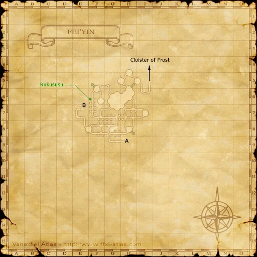

Level 75 reference · Zenith rules
This is the second Beastmaster Artifact Armor quest - otherwise known as AF2.
|


Image source
Walkthrough
- Talk to Brutus in Upper Jeuno who will give you three Aquafloras (key items) to put in some Underground Pools in Fei'Yin.
- There are 3 pools in the lower area of Fei'Yin at H-8, H-5 and F-5. When F-5 is inspected, Dabotz's Ghost appears. He can cast Tornado and does a variety of black magic, Smash Axe can stun it.
- After he dies, inspect the pool again, watch a cutscene, inspect the other two pools in that area if you didn't get them on the way in.
- Go back to Brutus - if you skip this step you will NOT get the collar from the chest.
- Next go to Castle Oztroja and kill Yagudo Conquistadors, Priors, Lutenists and Zealots for an Oztroja Chest Key. Find a chest, trade key and you'll get a Beast Collar.
- Trade the collar to the walking monkey called Tebhi who will disappear (respawn is 15 mins). Tebhi spawns in the basement area on this map. You should be able to spot him on Widescan.
- Tebhi was not walking around, nor did he depop when I did this quest. However, he did take the Collar from me. I went back to Brutus and he gave me the Beast Gaiters.
- He spawns "in the basement" which is the same area you go to get Password #2, as well as the Altar Room for Mission 4-1 Magicite.
- Head back to Upper Jeuno and talk to Brutus one final time to receive the Beast Gaiters.

- Note
- It is possible to solo the Yagudo for the Oztroja Chest Key at level 52 with either jug pets, or, at this map, by charming the Oozes in the pond in the middle square.
- Castle Oztroja Chest Maps
-
Chest Locations - 2d Floor
-
Chest Locations - 5th Floor
-
Chest Locations - 6th Floor
-
Chest Locations - 7th Floor


Game Description
Client: Brutus (Chocobo Stables, Upper Jeuno)
Summary:
- Many animals conscripted during the war did not return. Brutus wants you to put their souls to rest.
Adapted from Eden Wiki: Scattered into Shadow · Contributors and history · CC BY-SA 4.0. Revision 9280. Layout, links and optional background text adapted for Zenith.